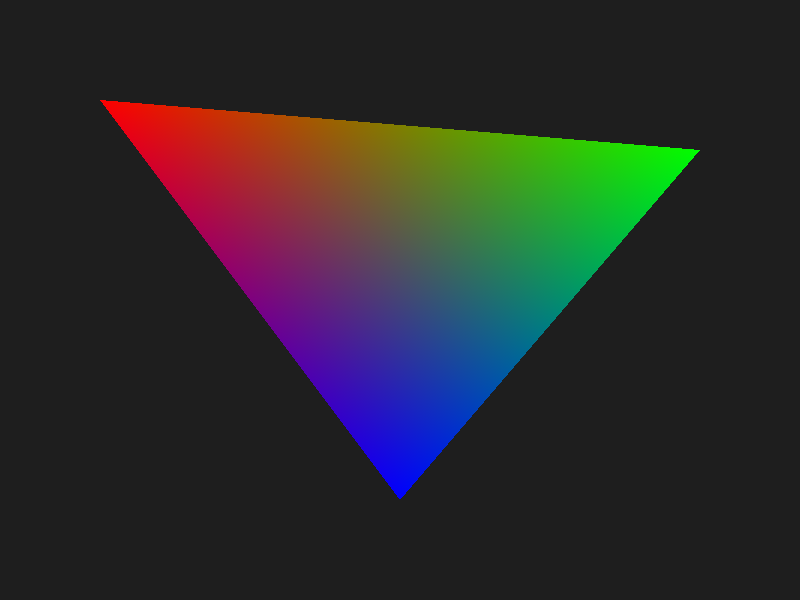
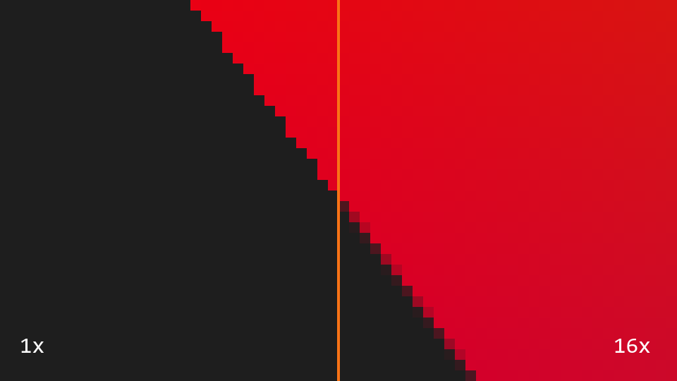

Software rasterizer in C
No OpenGL, no Vulkan. A framebuffer in memory, some maths, and a PNG at the end.
Engines, shader demos, tools and open source. Built to understand how graphics really works.
My game engine in C++. OpenGL and DirectX on Windows, and now running on Android. No Unity, no Unreal. I'm building it in public, one episode at a time.
A rendering engine for the web, written in TypeScript on top of WebGL.
Projects with a full write-up. See the result, then read how it works.

No OpenGL, no Vulkan. A framebuffer in memory, some maths, and a PNG at the end.

Same rasterizer, now with multisample anti-aliasing. Up to 16 samples per pixel.
Click on the screen, select the object under the cursor. Sounds trivial. It is not.
The wobbly models and swimming textures were hardware limits. Here is how to fake them.
What if all the shading happened in UV space instead of screen space?
Shader and rendering experiments. Click any one to play it here.
A 7 minute demo about Mowgli and Raksha, the wolf mother who raised him. Fixed-function OpenGL and Win32.
A delivery boy's journey through modern India. A team demo with the Shader Group, in WebGL and GLSL ES.
A Win32 and OpenGL demo.
PBR materials and lighting.
Subdividing geometry on the GPU.
Batched rendering of grass blades.
A spline editor inside my 3D engine.
Sprite-based animation in my C engine.
A font rendering system.
Volumetric light shafts.
Distance fog in a shader.
Real-time lighting in WebGL.
Free and in your browser. I built them because I needed them.
A minimal triangle rasterizer in C that writes a PNG. The base for the MSAA post.
C rgbguy / GlitchWorkA lightweight, cross-platform image editor in C++ and OpenGL.
C++ rgbguy / OpenGL-CatmullRomSplineCatmull-Rom splines in OpenGL.
C++ rgbguy / AzgarThe classic Snake game, rebuilt in OpenGL and C++. Runs on Windows, macOS and Linux.
C++ rgbguy / webgpu-triangleA starter template for WebGPU.
JavaScript rgbguy / Assembly101Experiments in x86 assembly.
x86 AssemblyEngines, rendering features, performance work. I take on graphics and R&D projects.
Work with me